HISTORIA DEL CORTAFUEGOS
El término firewall fireblock significaba originalmente una pared para confinar un incendio o riesgo potencial de incendio en un edificio. Más adelante se usa para referirse a las estructuras similares, como la hoja de metal que separa el compartimiento del motor de un vehículo o una aeronave de la cabina. La tecnología de los cortafuegos surgió a finales de 1980, cuando Internet era una tecnología bastante nueva en cuanto a su uso global y la conectividad. Los predecesores de los cortafuegos para la seguridad de la red fueron los routers utilizados a finales de 1980, que mantenían a las redes separadas unas de otras. La visión de Internet como una comunidad relativamente pequeña de usuarios con máquinas compatibles, que valoraba la predisposición para el intercambio y la colaboración, terminó con una serie de importantes violaciones de seguridad de Internet que se produjo a finales de los 80:
Clifford Stoll, que descubrió la forma de manipular el sistema de espionaje alemán.
Bill Cheswick, cuando en 1992 instaló una cárcel simple electrónica para observar a un atacante.
En 1988, un empleado del Centro de Investigación Ames de la NASA, en California, envió una nota por correo electrónico a sus colegas2 que decía:
"Estamos bajo el ataque de un virus de Internet! Ha llegado a Berkeley, UC San Diego, Lawrence Livermore, Stanford y la NASA Ames".
El Gusano Morris, que se extendió a través de múltiples vulnerabilidades en las máquinas de la época. Aunque no era malicioso, el gusano Morris fue el primer ataque a gran escala sobre la seguridad en Internet; la red no esperaba ni estaba preparada para hacer frente a su ataque.
Primera generación – cortafuegos de red: filtrado de paquetes
El primer documento publicado para la tecnología firewall data de 1988, cuando el equipo de ingenieros Digital Equipment Corporation (DEC) desarrolló los sistemas de filtro conocidos como cortafuegos de filtrado de paquetes. Este sistema, bastante básico, fue la primera generación de lo que se convertiría en una característica más técnica y evolucionada de la seguridad de Internet. En AT&T Bell, Bill Cheswick y Steve Bellovin continuaban sus investigaciones en el filtrado de paquetes y desarrollaron un modelo de trabajo para su propia empresa, con base en su arquitectura original de la primera generación.
El filtrado de paquetes actúa mediante la inspección de los paquetes (que representan la unidad básica de transferencia de datos entre ordenadores en Internet). Si un paquete coincide con el conjunto de reglas del filtro, el paquete se reducirá (descarte silencioso) o será rechazado (desprendiéndose de él y enviando una respuesta de error al emisor). Este tipo de filtrado de paquetes no presta atención a si el paquete es parte de una secuencia existente de tráfico. En su lugar, se filtra cada paquete basándose únicamente en la información contenida en el paquete en sí (por lo general utiliza una combinación del emisor del paquete y la dirección de destino, su protocolo, y, en el tráfico TCP y UDP, el número de puerto).5 Los protocolos TCP y UDP comprenden la mayor parte de comunicación a través de Internet, utilizando por convención puertos bien conocidos para determinados tipos de tráfico, por lo que un filtro de paquetes puede distinguir entre ambos tipos de tráfico (ya sean navegación web, impresión remota, envío y recepción de correo electrónico, transferencia de archivos…); a menos que las máquinas a cada lado del filtro de paquetes estén a la vez utilizando los mismos puertos no estándar.
El filtrado de paquetes llevado a cabo por un cortafuegos actúa en las tres primeras capas del modelo de referencia OSI, lo que significa que todo el trabajo lo realiza entre la red y las capas físicas.7 Cuando el emisor origina un paquete y es filtrado por el cortafuegos, este último comprueba las reglas de filtrado de paquetes que lleva configuradas, aceptando o rechazando el paquete en consecuencia. Cuando el paquete pasa a través de cortafuegos, éste filtra el paquete mediante un protocolo y un número de puerto base (GSS). Por ejemplo, si existe una norma en el cortafuegos para bloquear el acceso telnet, bloqueará el protocolo TCP para el número de puerto 23.
Segunda generación – cortafuegos de estado
Durante 1989 y 1990, tres colegas de los laboratorios AT&T Bell, Dave Presetto, Janardan Sharma, y Nigam Kshitij, desarrollaron la segunda generación de servidores de seguridad. Esta segunda generación de cortafuegos tiene en cuenta, además, la colocación de cada paquete individual dentro de una serie de paquetes. Esta tecnología se conoce generalmente como la inspección de estado de paquetes, ya que mantiene registros de todas las conexiones que pasan por el cortafuegos, siendo capaz de determinar si un paquete indica el inicio de una nueva conexión, es parte de una conexión existente, o es un paquete erróneo. Este tipo de cortafuegos pueden ayudar a prevenir ataques contra conexiones en curso o ciertos ataques de denegación de servicio.
Tercera generación — cortafuegos de aplicación
Son aquellos que actúan sobre la capa de aplicación del Modelo OSI. La clave de un cortafuegos de aplicación es que puede entender ciertas aplicaciones y protocolos (por ejemplo: protocolo de transferencia de ficheros, DNS o navegación web), y permite detectar si un protocolo no deseado se coló a través de un puerto no estándar o si se está abusando de un protocolo de forma perjudicial.
Un cortafuegos de aplicación es mucho más seguro y fiable cuando se compara con un cortafuegos de filtrado de paquetes, ya que repercute en las siete capas del modelo de referencia OSI. En esencia es similar a un cortafuegos de filtrado de paquetes, con la diferencia de que también podemos filtrar el contenido del paquete. El mejor ejemplo de cortafuegos de aplicación es ISA (Internet Security and Acceleration).
Un cortafuegos de aplicación puede filtrar protocolos de capas superiores tales como FTP, TELNET, DNS, DHCP, HTTP, TCP, UDP y TFTP (GSS). Por ejemplo, si una organización quiere bloquear toda la información relacionada con una palabra en concreto, puede habilitarse el filtrado de contenido para bloquear esa palabra en particular. No obstante, los cortafuegos de aplicación resultan más lentos que los de estado.
Acontecimientos posteriores
En 1992, Bob Braden y DeSchon Annette, de la Universidad del Sur de California (USC), dan forma al concepto de cortafuegos. Su producto, conocido como "Visas", fue el primer sistema con una interfaz gráfica con colores e iconos, fácilmente implementable y compatible con sistemas operativos como Windows de Microsoft o MacOS de Apple.[cita requerida] En 1994, una compañía israelí llamada Check Point Software Technologies lo patentó como software denominándolo FireWall-1.
La funcionalidad existente de inspección profunda de paquetes en los actuales cortafuegos puede ser compartida por los sistemas de prevención de intrusiones (IPS).
Actualmente, el Grupo de Trabajo de comunicación Middlebox de la Internet Engineering Task Force (IETF) está trabajando en la estandarización de protocolos para la gestión de cortafuegos.
Otro de los ejes de desarrollo consiste en integrar la identidad de los usuarios dentro del conjunto de reglas del cortafuegos. Algunos cortafuegos proporcionan características tales como unir a las identidades de usuario con las direcciones IP o MAC. Otros, como el cortafuegos NuFW, proporcionan características de identificación real solicitando la firma del usuario para cada conexión

 
